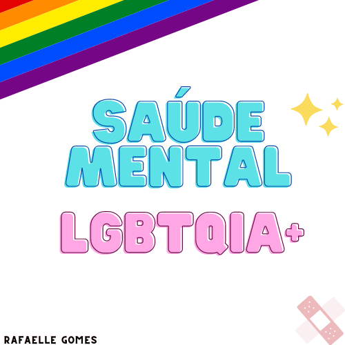
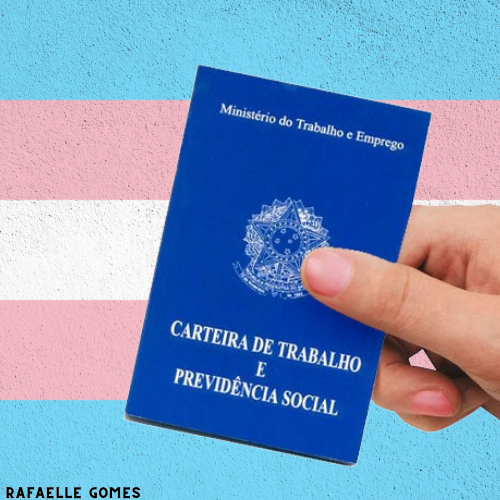

O preconceito é uma das maiores causas de adoecimento mental na comunidade LGBTQIA+
Por fazer parte de grupo minoritário, comunidade LGBTQIA+ é mais suscetível a ser acometida por transtornos mentais

Inserção de pessoas trans e travestis no mercado de trabalho formal ainda enfrenta dificuldades
Preconceito, violência e não aceitação são os vilões da saúde mental da comunidade LGBTQIA+. (...)